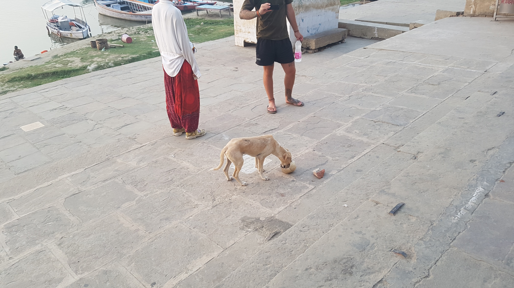

이곳은 인도다. 그래서 충격받지 않았다.
2017년 05월 04일
여행 D+31, 인도 D+2
이곳은 인도다. 그래서 충격받지 않았다.
약혐주의 임산부 및 노약자는 뒤로가기를 누르시오
새벽에 또한번 설사를 했다. 어제부터 4번째 배변이다. 그래도 괜찮다. 먹을것 다 먹고 걍 시원하게 설사 몇번 하지 뭐. 검색해봤는데 약 3~5일이 지나면 몸이 자동적으로 낫게 된다고 하니 이렇게 계속 지내보기로 했다. 먹자마자 싸는 심한 설사는 아니니 견딜만 하다. 아주 살짝 복통이 있는 정도.
5시에 일어났다. 보트투어에 가기 위해서다. 역시 아침에도 보트를 타니 즐거운 시간을 가졌다. 겐지스강에서 사람들이 목욕 하는것도 구경 했다. 그냥 보트 타고 이것저것 구경하는것 자체가 재밌다. 그 배에는 3명의 한국인과 1명의 덴마크인 1명의 일본인이 있었는데 모두 친해져서 더 재미있었다.
철수 보트가 있는 가트 근처에서 어떤 개가 무언가를 물고 돌아다니다가 자리에 놓고 코를 박고 있었다. 가까이서 봣더니 맙소사 사람 두개골의 일부분이었다. 이곳 겐지스강에서 일부 사람들은 화장하지 않고 물속에 수장한다고 하는데 그 사람들의 일부가 아닐까 생각된다. 개가 두개골을 땅에 놓고 할짝할짝 하고 있었는데 그 안쪽에 뭔가 희끗희끗한것도 보였다. 멀리서 사진도 찍었는데 이 일기장에 올릴지 말지 고민중이다.(근데 걍 올림ㅋ)
만약 이 장면을 한국에서 봤으면 나는 아마 큰 충격을 받았을지도 모른다. 하지만 이곳은 바라나시다. 이 장면이 정혀 이상하지 않았고 무언가 자연스러웠다. 나는 오히려 신기했다. 역시 이곳은 Amazing 인디아다.
한 30분 정도가 지났을까 가트를 벗어나 식당쪽으로 올라갔다. 올라가는 길에 옆에있던 한국인 친구가 무언가를 밟을뻔 했는데 알고보니 아까봤던 두개골이었다. 그리고 그 옆에는 아까 봤던 강아지가 있었다. 만약 그 친구가 밟았으면 정말 기분 나쁜 경험이었을것 같다. 천만다행이지. 아무튼 이런 경험은 정말 바라나시에서만 할 수 있지 않을까? 두고두고 할 이야깃 거리가 생겼다.
 우리는 생각보다 당황하지 않았다. 여긴 인도니까!!
보트를 모두 탄뒤 오늘 별 계획이 없었던 나는 그들을 따라 샤르나트에 가기로 했다. 부처님이 처음으로 가르침을 설파한 장소라고 한다. 총 6명이서 하나의 릭샤를 낑겨타고 가는데 힘들었지만 신났다. 인도에서는 모든것이 가능하다!
도착하니 여러 유적지가 있었다. 그런데 사전정보 없이 오니 뭐가뭔지 잘 모르겠다. 원래 이런 인간이 만든 유적지에 별 관심이 없어서 그런것 같기도 하다. 도착해서 갑자기 배가 아팠다. 하지만 그곳에 휴지를 팔지 않아다! 휴지를 구하기위해 멀리까지 걸어가서 결국 해결할 수 있었다. 벌써 땀범벅이 되었다.
도착후 점심을 먹은 뒤 숙소에 돌아왔다. 로비에 한 여자 한국인이 있어서 앉아서 이야기했는데 무척 특이한 사람이었다. 이름은 E 두달동안 이 게스트하우스에 살고 있었다. 무료로 숙박하는대신 한국인들을 도와주는 간단한 일들을 하고 있었다. 바라나시도 지겨워서 떠나고 싶은데 한국에 가서 일하기는 더 싫어서 떠나지 못하고 벌써 두달째 머물고 있다는 그는 조급함도 간절함도 별로 없어보이는 희한한 모습이었다. 정말 인도답게 모든것들을 담담하게 받아드리는 그녀의 태도가 인상적이었다.
대화가 재밌었는지 약 2어 시간동안 서로 이야기했다. 여행자 블로그보는게 취미라더니 여행정보를 정말 많이 알고 있었다. 내 여행계획도 많은 도움을 받았다. 이 대화이후에 나는 인도 레에 가지 않기로 했다! 인도 북부만 살짝 경험 한뒤 바로 훈자에 가기로 했다. 사실 안나푸르나에서 설산은 지겹게 보기도 했고 인도 레와 파키스탄 훈자도 모두 같은 고산 지대이기 때문에 하나는 스킵해도 될것 같았다. 그리고 아낀 시간으로 앞으로 남은 여행지에 더 집중하기로 했다.
대화를 마치고 나는 바로 기차표를 예매하러 여행사에 갔다. 5월6일 토요일 아침 6시 50분에 나는 찬디가르로 떠난다. 20시간 걸리는 기차다. 도착 후 버스를 타고 약 4시간에 걸쳐 마날리에 갈것이다. 마날리도 숲과 굉장히 멋진것들이 많다고 한다. 거기서 또 쉬고 가면 좋을것 같았다.
그렇게 방에서 쉬지는 못했다. 낮잠을 못잤다. 밖에 나가서 라씨도 먹고 구경도 하고 돌아오니 샤워하고 저녁먹을 시간이 되었다. 아까 같이 놀았던 사람들과 7시에 만나서 저녁식사를 하기로 했다. 이렇게 같이 어울리게된 사람들이 생기니 외롭지 않고 좋았다. 내생각에는 이곳 바라나시에서는 보트투어를 한 사람들끼리 어울리게 되는것 같다. 그래서 혼자와서 외롭다면 보트투어를 필수로 하면 좋지 않을까 싶다.
저녁식사는 인도 현지인들이 가는 고급레스토랑에서 먹었는데 무척 맛있었다. 인도음식 입맛에 잘 맞는것 같다. 네덜란드인 A 일본인 M 한국인 S 와 K 그리고 J 이렇게 6명이서 같이 어울리게 되었고 거기에 러시아인 2명까지 같이 식사를 하게 되었다. 이들 4명은 이미 아그라에서 이곳 바라나시까지 같은 버스를 타고온 동행이었다. 거기에 보트투어에서 만난 내가낀 것이다. 처음에는 약간 어색했지만 곧 나도 그 사이에 낄 수 있었다. 이곳 바라나시처럼 다들 한국인들끼리끼리 다니는 장소에 혼자다니면 상대적인 외로움이 크게 느껴진다. 나도 어쩔수 없이 동행을 원하게 되었던것 같다. 식당에서 이야기하다가 러시아놈이 "한국인을 개고기를 먹는다고 들었다. 왜!?" 라고 이해할 수 없다는듯이 건방지게 물어본다. 나는 "그것은 다양한 음식 문화 차이일뿐, 우리는 각 나라의 문화를 존중해야한다. 고 따위로 왜 라고 물어보기 전에" 라고 말했더니 거기있던 서양놈 모두가 끄덕였다. 백인넘들을 이긴것 같아서 뿌듯했다.
대부분 한국인들은 지금 황금연휴 기간을 이용해 바라나시에 왔다. 정말 수 많은 한국인이 지금 바라나시에 있다. 이렇게 외국에 한국인이 많으니 여행하는 느낌이 덜 난다고 해야할까. 여행지도 유행이다. 많은 사람들이 똑같은 장소만 간다. 남들이 경험한 흔적을 따라 가는것이 여행의 올바른 모습일까? 잘 모르겠다. 물론 더 많은 정보를 얻고 쉽게 여행할 수 있다는것은 장점이다. 그러나 많은 사람들이 그 장소에서 좋게 경험했던것들이 막상 내가 갔을때는 좋지 않게 느껴질 수 도 있다. 만약 그런상황에서는 내가 상대적으로 불감증을 가진건지 자괴감도 들수있다. 그래서 많은 여행자가 방문하는 장소는 그런 장/단점이 있는것 같다.
숙소에 돌아와서 아까 대화했던 E와 같이 망고를 먹으면서 또 이야기를 나눴다. 그러나 놀라운 사실을 알게 되었는데 E가 현재 이 게스트하우스를 운영하고 있다는 사실이었다. 일부의 보증금과 한달 렌트비를 지불하고 운영중에 있었다. 깜짝놀랐다. 나랑 나이도 같았는데 정말 대단한 사람이라는 생각이 들었다. 아까 점심에 내게 말했던것은 다 훼이크였다. 이상한 소문이 두려워 그렇게 했다고 한다. 이해간다.
같은 한국인들이 모두 똑같이 사는것은 아니었다. 모두 나름 틀에박힌 한국에서의 삶을 떠나려 노력하고 있었다. 그런 사람들은 여행중에 많이 만났다. 그들에게 많은 것들을 배우게 되고, 또 나도 다른삶을 선택할 수 있겠다는 용기를 얻게 되는것 같다.
생각 해보니, 나도 게스트하우스를 운영하고 있는것이나 다름 없었다.(숲사람 하우스 링크) 공통의 관심사이다 보니, 관련해서 서로 많은 이야기를 나눴다. 나도 조금더 게스트하우스의 오너 답게 생각해야할 필요성을 느꼈다. 내일 5시에 일어나야함에도 불구하고 우리는 거의12시까지 대화를 나눴다. 그 대화가 너무 재미있어서 잘 수가 없었다. 새로운 사람들 그리고 그들의 삶을 간접 체험하고 내 삶을 공유하는 것. 이것이 여행의 반 아닐까 생각된다.